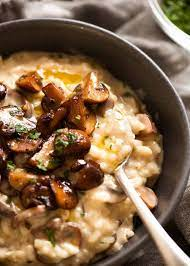

Mushroom Risotto

Delicious mushroom risotto made with vegetable broth, cream, and a variety of fresh vegetables. Serve as a side dish or filling main course.
Ingredients
- 1 tablespoon olive oil
- 3 small onions, finelly chopped
- 1 teaspoon minced fresh parsley
- 1 teaspoon minced celery
- salt and pepper to taste
- 1 ½ cups sliced fresh mushrooms
- 1 cup whole milk
- ¼ cup heavy cream
- 1 cup rice
- 5 cups vegetable stock
- 1 teaspoon butter
- 1 cup grated Parmesan cheese
Steps
- Heat olive oil in a large skillet over medium-high heat. Saute the onion and garlic in the olive oil until onion is tender and garlic is lightly browned. Remove garlic, and stir in the parsley, celery, salt, and pepper. Cook until celery is tender, then add the mushrooms. Reduce heat to low, and continue cooking until the mushrooms are soft.
- Pour the milk and cream into the skillet, and stir in the rice. Heat to a simmer. Stir the vegetable stock into the rice one cup at a time, until it is absorbed.
- When the rice has finished cooking, stir in the butter and Parmesan cheese, and remove from heat. Serve hot.